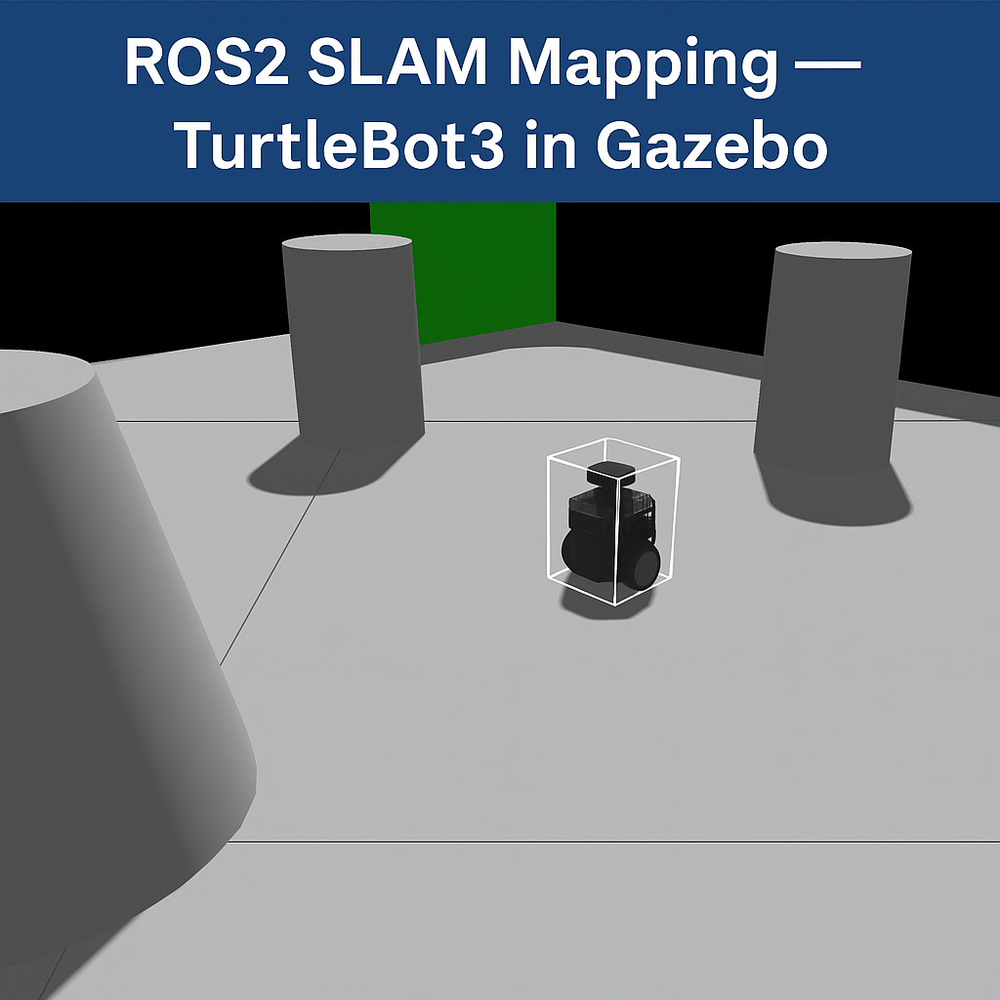

Projects
A curated selection of my work in robotics simulation, control, sim2real validation, and evaluation infrastructure. Click “View Details” for full breakdowns, demos, and code links.
Robotics & Evaluation Infrastructure
These are the projects most relevant to Robotics Simulation / Control / Sim2Real roles.
Robot Eval Platform – Regression Gating & CI for Robot Behavior
Designed and implemented a company-grade evaluation and regression gating platform for learning-enabled controllers and classical robotics stacks. The platform converts rollouts into episode-level metrics, videos, reports and enforces an explicit SHIP / BLOCK decision before deployment.
Key features:
- Episode-level metrics & rollout video tracking
- Baseline vs candidate comparison (locked baselines)
- Automatic regression detection (success, latency, safety)
- Gate decisions enforceable via CI (GitHub Actions)
- Simulator-agnostic artifact format (not MuJoCo-specific)
Note: The failing GitHub Action in the demo is intentional and demonstrates performance-based release gating.
Related pages: Results • Architecture
M.Sc. Thesis – Gesture-Based Cartesian Control for Franka Emika Panda
Developed a gesture-based Cartesian and rotational control system for intuitive human–robot interaction. The pipeline processes IMU signals (acc/gyro) for orientation estimation, filtering, and noise handling, combines them with EMG features, and maps gestures to stable real-time robot commands.
Validated in MuJoCo simulation and transferred to a real Franka Emika Panda robot, addressing practical constraints including latency, sensor noise, safety limits, and hardware variability.
Key contributions:
- IMU preprocessing: filtering, normalization, orientation estimation
- Gesture recognition using IMU + EMG features
- Cartesian & rotational control using IK and Jacobians
- Simulation-to-real transfer and robustness evaluation
- Contact-rich screw insertion with coordinated axial + rotational motion
MuJoCo Simulation Environment for Franka Emika Panda
Designed a MuJoCo environment that mirrors the lab setup (table, screw box, tool) used for gesture-based teleoperation and screwing / pick-and-place experiments.
Demo video:
Pick & Place in MuJoCo using Franka Emika Panda
Implemented a full pick & place pipeline in MuJoCo with a custom Tkinter GUI: detect → hover → pre-grasp → grasp → lift → place. Emphasized smooth Cartesian behavior and repeatable execution.
Demo Video:
ROS2 Nav2 Autonomous Navigation (Custom Behavior Tree)
ROS2 SLAM Mapping with TurtleBot3 (ROS2 Jazzy, Gazebo)
Implemented an online async SLAM pipeline using SLAM Toolbox with Gazebo + teleop + RViz2. Includes map saving for later Navigation2 experiments.
Project image:

Earlier Embedded & Academic Projects
Earlier work that built my foundation in embedded systems, sensing, and hardware/software integration.
Mine Sweeping Robot (Raspberry Pi)
Developed a landmine-detecting robot using Raspberry Pi and sensors for a national Robo-Fight competition. Implemented obstacle avoidance and metal detection logic for simulated mine detection/removal.
Demo timestamp: 2:03
GitHub repo (with teammate Md. Kaiser Raihan): 🔗 View on GitHub
Collaborated with: rahi008
Car Speed Measurement Device (Microcontroller)
Built a speed measurement setup using two IR sensors and microcontroller timer interrupts. Computed speed as Distance/Time and displayed real-time results on a 16×2 LCD.
Automatic Plant Irrigation System (Arduino)
Designed an automatic irrigation system using a soil moisture sensor (voltage divider) and relay-driven pump. Turned the pump on/off based on moisture thresholds for efficient water usage.
n-bit Comparator in Cadence Virtuoso (VHDL / Verilog)
Designed and simulated an n-bit comparator in Cadence Virtuoso (schematic + layout), verified with DRC/LVS and evaluated delay/power/area trade-offs.